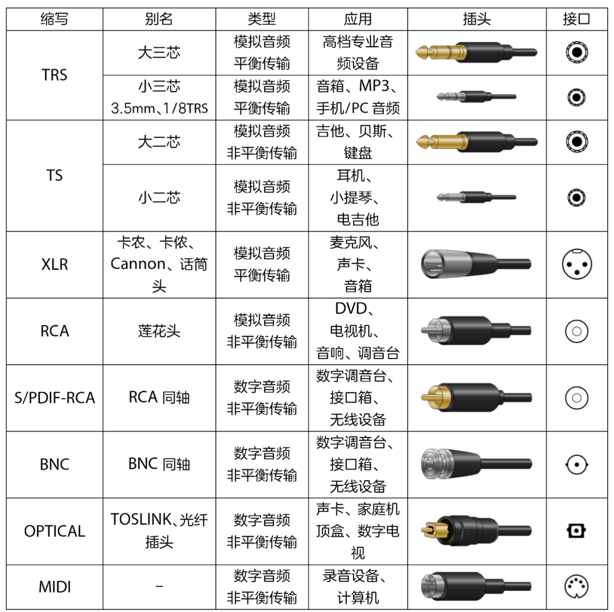
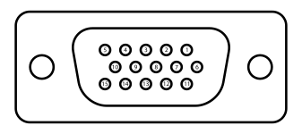
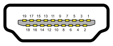

接口是两实体交换资料的介质，交换资料的实体可以是软件、电脑硬件、外部设备、人等等。有些接口是双向的，可以收发信息，譬如触摸屏；有些接口是单向的，仅能收或者发信息，譬如鼠标或喇叭。人类与计算机软体之间的接口是用户界面；电脑和外部设备等计算机硬件之间的接口是硬件接口；电脑等计算机软件之间的接口是软件接口。
在视频会议设备中，存在丰富的硬件外设和硬件接口。设计一款优秀的视频会议设备，需要搭配合适的硬件外设，需要对音视频硬件接口能力有深入的认知。
音频接口
音频接口是连接麦克风和其他声源计算机的设备，其在模拟和数字信号之间起到桥梁连接的作用。
音频接口分类
音频接口按照传输信号的类型可分为模拟音频接口和数字音频接口，按照接线方式可分为平衡接口与非平衡接口。
模拟音频是在模拟状态下记录、处理、传输和处理音频信号的技术。常见的模拟音频接口为TRS接口、XLR卡侬头、RCA莲花头。
数字音频是通过数字信号处理的手段，记录、存储、编辑、压缩或播放音频信号的技术。常见的数字音频接口为AES/EBU物理接口、S/PDIF接口、同轴接口以及光纤接口。
平衡传输接口使用两个通道分别传送电压大小相同而相位相反的信号。接收端设备将这两组信号相减，干扰信号就被抵消掉，从而获得高质量的模拟信号。常见的平衡传输音频接口为TRS接口、XLR卡侬头。
非平衡传输接口由一条负责传送信号的信号线和一条接地线组合而成。信号在传输过程中，线材会受到外界干扰通过话放或功放的二次放大，由于抗噪声能力比较弱，所以容易输出一段带有噪音的声音。常见的非平衡传输音频接口为TS接口、RCA莲花头。
Line Out是一个音频输出接口，旨在将线性音频信号发送给其他设备，Line In是一个音频输入接口，用于接受来自另一个设备的线性音频信号。Mic In是一个音频输入接口，用来连接麦克风录音使用。
Line In和Mic In的区别在于，Mic In需要有前置放大器，也就是麦克风本身输出功率小，必须要有一个外部的放大设备来放大音频信号，Mic In接口就是起到这个作用。譬如卡农口就是Mic In，需要48V幻想电源。
常用音频接口
TRS接口
TRS，Tip（尖）、Ring（环）、Sleeve（套），一般用于接插耳机和麦克风。以下图为例：
- ① - Sleeve，套，接地；
- ② - Ring，环，立体声的右沟道；
- ③ - Tip，尖，上为立体声的左沟道，下为单声道的主声道
- ④ - 绝缘环
依据接口的环（R）数不同可以将接口分为TS（无环，尖和套各提供一个接触点）、TRS（一环，尖、环、套共提供三个接触点）、TRRS（两环，环多提供一个接触点）。常见接口尺寸包含1/4"（6.3mm）、1/8"（3.5mm）、3/32"（2.5mm）。以下图为例，从左到右分别为：
- 2.5mm 单声道（TS）：用于早期掌上随身听或移动电话的耳机连接，现多用于为小型设备输入/输出电源。
- 3.5mm 单声道（TS）：小二芯，常用于耳机、小提琴、电吉他等。
- 3.5mm 立体声（TRS）：小三芯，常用于随身听、移动电话、录音笔等3C产品的耳机和音频输出。
- 6.35mm 立体声（TRS）：大三芯，常用于中大型音频设备，譬如台式CD播放器、专业录音室耳机等。
大三芯用于立体声信号的传输，一般采用平衡式接法，用于传输平衡信号；大二芯用于单声道信号的传输，一般采用非平衡式接法，用于传输非平衡信号。大二芯相对于大三芯少一个环（Ring）。
- 大三芯接法
- 大二芯接法
XLR卡侬头
卡侬头是一种专为电容麦等高端话筒服务的音频接口头，常用于连接专业麦克风、影音器材、舞台设备等，并使用平衡传输方式，需要幻象供电（48V）。卡侬头分为公母两种，通常为3脚，如下图所示：
- 1 - 底架接地（线缆保护罩）
- 2 - 正极终端（热）
- 3 - 回路终端（冷）
卡侬头一般采用平衡式接法，用于传输平衡信号。
RCA莲花头
RCA接口采用同轴传输信号的方式，中轴用来传输信号，外沿一圈的基础层用来接地。可以用来传输模拟视频或音频、数字音频等。常用于连接调音台、电视机等。
每一根RCA线缆负责传输一个声道的音频信号。因此，可以根据对声道的实际需要，使用与之数量相匹配的RCA线缆。RCA接口常以颜色区分，黄色用于复合视频，模拟立体声音频中以白色（或黑色）作左声道，红色作右声道。
莲花头一般采用非平衡式接法，用于传输非平衡信号。
接口对比表

视频接口
视频接口的主要作用是将视频信号输出到外部设备，或者将外部采集的视频信号收集起来。
视频接口分类
视频接口按照传输信号的类型可以分为模拟视频接口和数字视频接口。常用的模拟视频接口包含：VGA、AV、YUV、S-Video等，常用的数字视频接口包含：USB、SDI、HDMI、DVI-D、Mini-DP、POE等。
常用视频接口
VGA
VGA接口，Video Graphics Array connector，是一种3排共15针的DE-15，用来传输模拟视频信号。VGA接口通常用在电脑的显卡、显示器及其他设备。

DVI
DVI接口，Digital Visual Interface，是用来传输未经压缩的数字化影像。常用在LCD、数字投影机等显示设备上。
- DVI-D，数字信号
- DVI-A，模拟信号
- DVI-I，混合数字/模拟信号

影音接口
部分音视频接口即支持音频传输也支持视频传输，譬如USB、HDMI、DP等。
常用影音接口
USB
USB，Universal Serial Bus，通用串行总线，是连接计算机系统与外部设备的一种串口总线标准。所有的USB接口共享一个USB总线带宽，如果几台设备共用一个USB通道，主控制芯片会对每台设备可支配的带宽进行分配、控制。
现有USB标准，按照速度等级和连接方式，可以将USB分为以下七种版本：
| 版本 | 传输速率bps |
|---|---|
| USB 2.0 LowSpeed | 1.5 mbps |
| USB 2.0 FullSpeed | 12 mbps |
| USB 2.0 HiSpeed | 480 mbps |
| USB 3.2 Gen 1 | 5 gbps |
| USB 3.2 Gen 2 | 10 gbps |
| USB 3.2 Gen 2x2 | 20 gbps |
HDMI
HDMI，High Definition Multimedia Interface，高清多媒体界面，可以发送未压缩的音频及视频信号。常用于机顶盒、DVD播放器、个人电脑、电视游戏机等设备。

SDI
SDI，Serial Digital Interface，数字分量串行接口，在摄像机领域广泛使用。
SDI接口按照传输速率分为四类：
| 版本 | 传输速率bps |
|---|---|
| SD-SDI | 270 mbps |
| HD-SDI | 1.485 mbps |
| 3G-SDI | 2.97 gbps |
| 12G-SDI | 12 gbps |
DP
DP，Display Port，数字视频接口标准，主要用于视频源与显示器等设备的连接。
POE
POE，Power over Ethernet，POE供电，是一种可以在以太网中透过双绞线来传输电力与资料设备上的技术。

接口对比表
| 缩写 | 类型 | 应用 | 分辨率@刷新率 | 传输距离 |
|---|---|---|---|---|
| VGA | 模拟/视频 | 显卡、显示器 | 2560×1600@60Hz | 15~30m |
| HD-SDI | 数字 | 摄像头、麦克风 | 1920×1080@30Hz | 150m |
| 3G-SDI | 数字 | 摄像头、麦克风 | 1920×1080@60Hz | 150m |
| 12G-SDI | 数字 | 摄像头、麦克风 | 3840×2160@60Hz | 150m |
| DVI-I | 数字/视频 | 显卡、显示器 | 2560×1600@60Hz | 7~15m |
| USB3.2 | 数字 | 摄像头、麦克风 | 3840×2160@30Hz | 3m |
| HDMI2.0 | 数字 | 显示器、摄像头、麦克风 | 3840×2160@60Hz | 15m |
| DP1.2 | 数字 | 摄像头、麦克风 | 4096×2160@60Hz | 10m |
| DP1.4 | 数字 | 摄像头、麦克风 | 7680 × 4320@60Hz | 10m |
| POE | 数字/视频 | 摄像头、麦克风 | 100mbps/Cat5 1000mbps/Cat6 |
100m/Cat5 150m/Cat6 |
串行接口
串行接口主要用于串行式逐位数据传输。常用的有RS-232，其分为8针接口、9针接口和25针接口。
- RS232
- RS-232/RS422/RS485 to RJ45
| 版本 | 传输方式 | 传输距离 | 传输速率 |
|---|---|---|---|
| RS-232 | 非平衡传输/单工 | 15m | 20kbps |
| RS-422 | 平衡传输/全双工 | 1219m | 10mbps |
| RS-485 | 平衡传输/半双工 | 1219m | 10mbps |